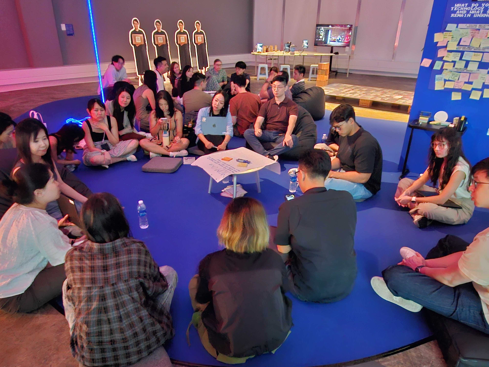

Conscious Builder Community:
Gathering #2
The Conscious Builders Community is a program developed to bring AI developers, designers, researchers and ethicists together to build better products. Here, we share, debate, workshop and design.
Through inspiration sessions and hands-on product garages: we help builders to engage in critical conversations, identify potential risks, imagine better possibilities, and stay inspired and connected to the human impact of working with AI.
